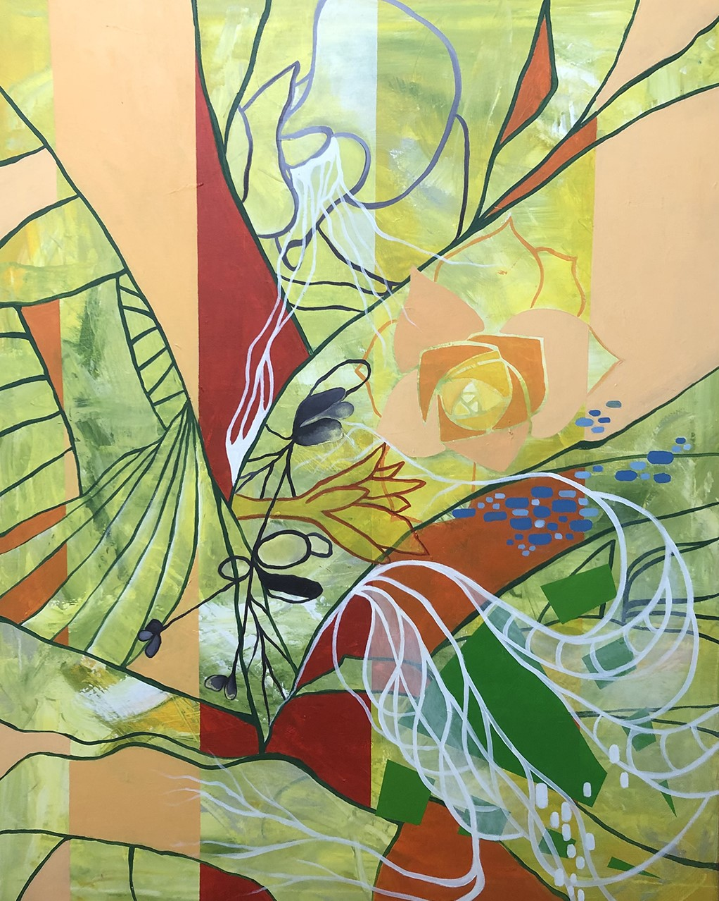
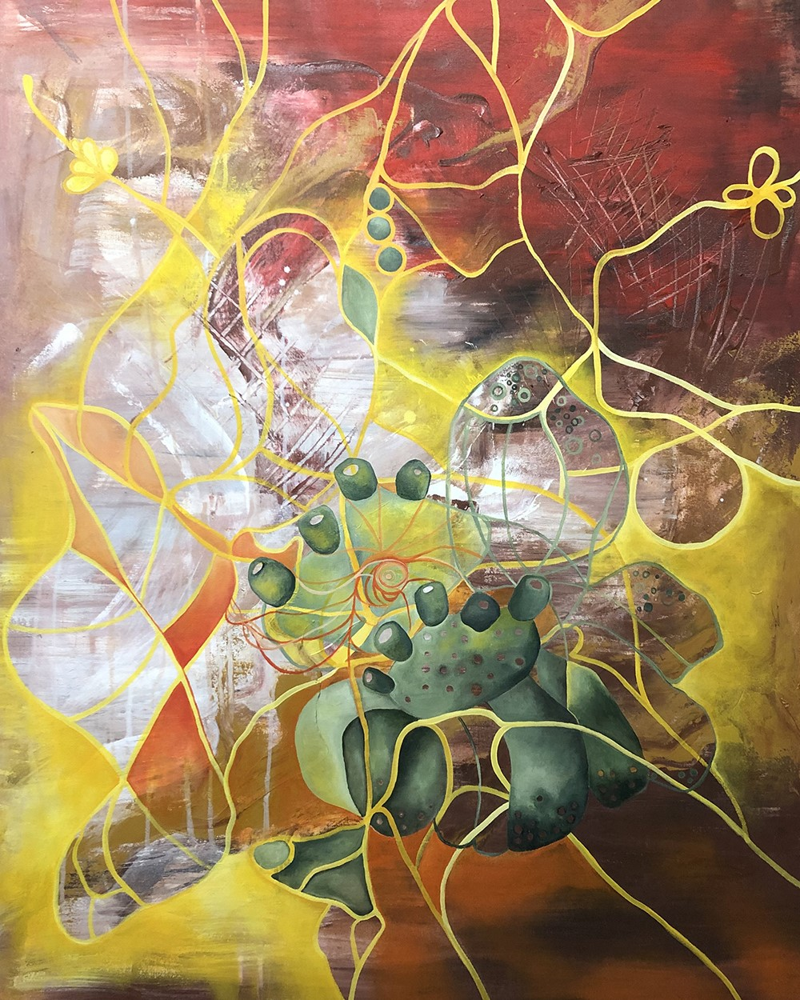
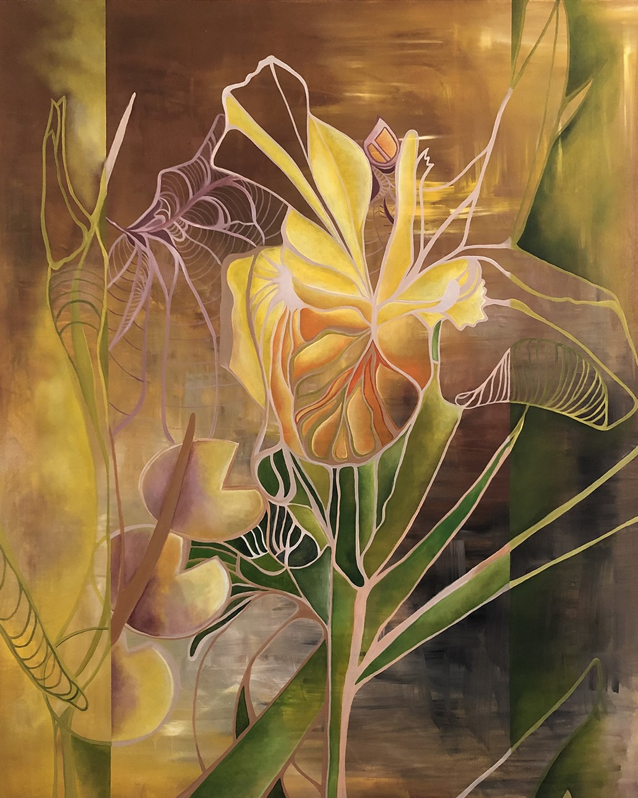

Trabajo Artístico






Mi trabajo artístico comienza con mi gran interés por la
Naturaleza y su
protección. Mis obras reflejan una verdadera e intensa armonía que obtengo a través de los
colores, texturas y las transparencias que surgen de dicho trabajo y de donde emergen diversos
enlaces y formas que dan origen a la obra artística.
Mi interés es trasmitir con mis obras la toma de conciencia del cuidado de la Naturaleza
partiendo de sus partes mas pequeñas y débiles. Comencé este proyecto tomando fotografías e
investigando las partes más pequeñas e intimas de la Naturaleza, deteniéndome en el mínimo
detalle, aquellas partes escondidas. Ubicándome en aquel espacio llegar a expresar ese
sentimiento que me provoca de un gesto desorganizado y desordenado hasta su total control. Es
por dicha razón que mi trabajo comienza con trazos muy gestuales y descontrolados y a la vez
tienen un espacio ordenado, controlador y dominante.
My artistic work is related to my great interest in
Nature; its protection and preservation. My works reflect a true and intense harmony I obtain
from colours, textures and transparencies which emerge from the choice of techniques; and
together with the combination of the edges of the curving, twisting and swirling lines and
shapes it is possible to give rise to these pieces of art.
The main reason why my artistic work is so linked to nature is because I am really interested in
making people become aware of the protection of Nature in all its aspects - from the smallest to
the weakest elements. I started this project by taking photographs and investigating the
smallest and most intimate parts of Nature, dwelling on the smallest details, even in those
hidden parts. This allows me to immerse myself in that tiny hidden part of nature and try to
feel identified with it and with that feeling that provokes something in me which helps me to
develop disorganized and disordered movements which lead to a total control of it.
It is for this reason that my work begins with very gestural and uncontrolled strokes and at the
exact moment they have an organized, controlled and dominant space.
Mon travail artistique commence par mon grand intérêt
pour la Nature, sa protection et ses soins. Mes œuvres reflètent une harmonie vraie et intense
que j'obtiens à travers les couleurs, les textures et les transparences qui découlent de ladite
œuvre et d'où émergent divers liens et formes qui donnent naissance au travail artistique.
Mon intérêt est de transmettre avec mes œuvres la conscience pour le soin de la Nature à partir
de ses parties les plus petites et les plus faibles. J'ai commencé ce projet en prenant des
photographies et en explorant les parties les plus petites et les plus intimes de la nature, en
m'attardant sur les moindres détails, dans ces parties cachées. Me placer dans ce petit espace
de connexion jusqu'à ce que j'arrive à exprimer ce sentiment qui me provoque en favorisant
l'action d'un geste désorganisé et désordonné jusqu'à son contrôle total. C'est pour cette
raison que mon travail commence par des traits très gestuels et incontrôlés et en même temps ils
ont un espace ordonné, contrôlant et dominant.
"Ama al mundo como si fueras tú mismo... entonces serás del todo libre."
Procesos
Naturaleza Infinita I
Naturaleza Infinita II
Naturaleza Infinita III

Naturaleza Infinita IV
Naturaleza Infinita V